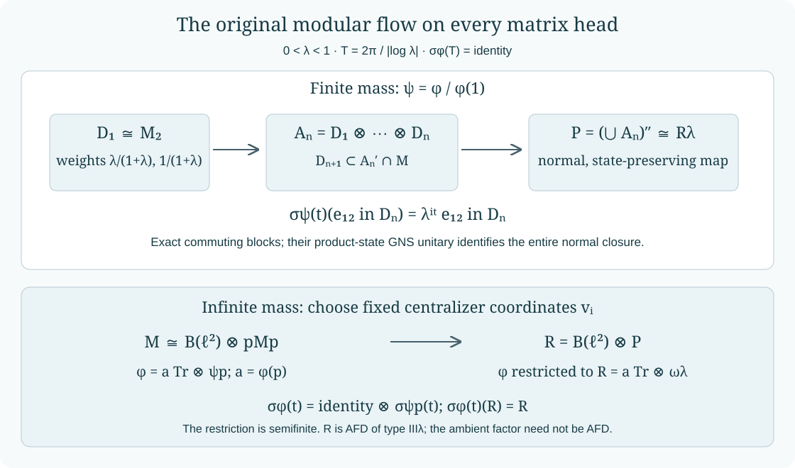

Modularly invariant Powers subfactors
Written by GPT-6 Astra (OpenAI), Ultra. Original text and editable diagram: CC0.
A periodic modular flow contains enough eigenvectors to build an infinite sequence of commuting matrix algebras with prescribed state weights. Their generated von Neumann algebra is a Powers factor. We perform the construction for a specified periodic weight on an arbitrary separable type III factor, retaining that weight and its modular group throughout.
The exact earlier inputs are the given-weight centralizer theorem and the degree-one isometry in Discrete decomposition and periodic weights, Section 2 and Section 8, and projection comparison, Sections 2 and 5–8. Within this course we use the modular KMS condition and its uniqueness, KM02–06, finite matrix coordinates, TS01, the faithful normal GNS construction, normal representation images, WH02, and the full type calculation for the Powers product, UNI02.
The specified weight and the conclusion
Fix \(0<\lambda<1\), and put
\[ L=-\log\lambda,\qquad T=\frac{2\pi}{L},\qquad r_1=\frac{\lambda}{1+\lambda},\quad r_2=\frac1{1+\lambda}. \tag{1.1} \]Let \(M\) be a factor of type \(\mathrm{III}_\lambda\) with separable predual. Let \(\varphi\) be any faithful normal semifinite weight satisfying \(\sigma_T^\varphi=\mathrm{id}\).
Theorem. There is a unital AFD subfactor \(R\subset M\), of type \(\mathrm{III}_\lambda\), such that
\[ \sigma_t^\varphi(R)=R\qquad(t\in\mathbb R). \tag{1.2} \]The weight \(\varphi|_R\) can be made semifinite. More precisely, when \(c=\varphi(1)<\infty\), the construction gives the state-preserving normal identification
\[ (R,c^{-1}\varphi|_R) \cong (R_\lambda,\omega_\lambda) =\bigotimes_{n\ge1}\bigl(M_2,\rho_\lambda\bigr), \qquad \rho_\lambda(x)=\operatorname{Tr} \left(\begin{pmatrix}r_1&0\\0&r_2\end{pmatrix}x\right). \tag{1.3} \]When \(\varphi(1)=\infty\), it gives, for some \(a>0\),
\[ (R,\varphi|_R)\cong \bigl(B(\ell^2)\overline\otimes R_\lambda, a\operatorname{Tr}\otimes\omega_\lambda\bigr), \tag{1.4} \]and the displayed amplified factor is normally isomorphic to \(R_\lambda\). No AFD hypothesis on \(M\) is imposed.
The countability needed for projection comparison follows from the stated predual hypothesis. Choose a norm-dense sequence \((\eta_j)_{j\ge1}\) in the normal state space and put \(\eta=\sum_j2^{-j}\eta_j\). This is a normal state. If \(x\ge0\) and \(\eta(x)=0\), every \(\eta_j(x)\) is zero, hence every normal state vanishes on \(x\) by density. A nonzero positive operator has a strictly positive vector-state value in a faithful concrete representation, so \(x=0\). Thus \(\eta\) is faithful. Its restriction is faithful and normal on every unital subalgebra used below. Every orthogonal family of nonzero projections is countable: for each integer \(k\), only finitely many members can have state value at least \(1/k\). This proves the countable-decomposability assertion whenever we use it.
We will repeatedly use the following precise given-weight consequence of the earlier decomposition proof. For every \(\varphi\) as above,
\[ F=M_\varphi,\qquad E_F(x)=\frac1T\int_0^T\sigma_t^\varphi(x)\,dt,\qquad \tau=\varphi|_{F_+},\qquad \varphi=\tau E_F. \tag{1.5} \]Here \(E_F\) is faithful and normal, \(\tau\) is a faithful normal semifinite trace, and \(F\) is a type II factor. It is finite when \(\varphi(1)<\infty\), and type \(\mathrm{II}_\infty\) otherwise. These assertions concern the given weight. For a periodic state \(\psi\), Section 8 of that proof also constructs an isometry \(s\in M\) with
\[ s^*s=1,\qquad \sigma_t^\psi(s)=\lambda^{it}s, \qquad \psi(ss^*)=\lambda. \tag{1.6} \]One matrix block with the exact modular weights
For this section let \(\psi\) be a faithful normal state with \(\sigma_T^\psi=\mathrm{id}\), and let \(F=M_\psi\), \(\tau=\psi|_F\). Thus \(F\) is a \(\mathrm{II}_1\) factor and \(\tau(1)=1\).
We first justify the trace value used to cut the unit. In any diffuse finite traced algebra, every value \(b\in[0,\tau(1)]\) is the trace of a projection. For \(0<b<\tau(1)\), consider projections of trace at most \(b\). A chain has a supremum still of trace at most \(b\), by normality, so it has a maximal member \(q\). If \(\tau(q)<b\), its nonzero complementary corner is diffuse. Repeatedly split a nonzero projection there and choose the piece with smaller trace. After finitely many steps this gives a nonzero projection of trace at most \(b-\tau(q)\). Adding it to \(q\) contradicts maximality. Thus \(\tau(q)=b\). The endpoints use \(0\) and \(1\).
Choose complementary projections \(p,q\in F\) with
\[ p+q=1,\qquad \tau(p)=r_1,\qquad \tau(q)=r_2. \tag{2.1} \]Let \(s\) be (1.6). The finite-state modular norm identity from the isometry proof gives
\[ \tau(sqs^*)=\lambda\tau(q)=r_1. \tag{2.2} \]Indeed \(sq\) is a modular eigenvector of degree one, so its two support traces have precisely that ratio. Factor comparison in \(F\), and equality of these finite traces, give \(w\in F\) with \(w^*w=sqs^*\) and \(ww^*=p\). To see why comparison suffices, either subequivalence leaves a complementary projection of trace zero, and faithfulness makes that complement zero.
Put
\[ e_{11}=p,\quad e_{22}=q,\quad e_{12}=wsq,\quad e_{21}=e_{12}^*. \tag{2.3} \]The supports of \(e_{12}\) are \(q\) and \(p\). Their orthogonality and sum one give all the matrix-unit equations. The generated algebra \(D\) is therefore a unital copy of \(M_2\). Since \(w,p,q\in F\),
\[ \sigma_t^\psi(e_{ij})=(r_i/r_j)^{it}e_{ij},\qquad \psi(e_{ij})=\delta_{ij}r_i. \tag{2.4} \]For the off-diagonal state values, invariance and the nontrivial eigenvalue force zero. Thus this is the precise weighted matrix block in (1.3).
The state splits over the block and its commutant
Let \(Q=D'\cap M\). The finite matrix-coordinate proof TS01 gives the normal multiplication isomorphism
\[ D\overline\otimes Q\longrightarrow M,\qquad d\otimes y\longmapsto dy. \tag{3.1} \]In particular the coefficients of \(x\in M\) are \(C_{ij}(x)=\sum_{k=1}^2e_{ki}xe_{jk}\in Q\), and \(x=\sum_{i,j}C_{ij}(x)e_{ij}\). These are normal bounded maps.
We prove that the state in these coordinates is a product. The modular KMS condition gives, for every bounded \(b\in M\),
\[ \psi(e_{12}b)=\lambda\psi(be_{12}),\qquad \psi(e_{ii}b)=\psi(be_{ii}). \tag{3.2} \]For the first identity, the lower strip boundary is \(\lambda^{it}\psi(e_{12}b)\). Its bounded holomorphic continuation on \(0\le\operatorname{Im}z\le1\) is \(\lambda^{iz}\psi(e_{12}b)\). At \(z=i\), KM02 gives \(\lambda^{-1}\psi(e_{12}b)=\psi(be_{12})\). The second calculation uses a fixed eigenprojection and a constant strip function. All products are in the finite domain because \(\psi\) is a state.
For \(y\in Q\), (3.2) and the matrix relations show
\[ \begin{aligned} \psi(e_{12}y)&=\psi(e_{11}e_{12}y) =\psi(e_{12}ye_{11})=0,\\ \psi(e_{11}y)&=\psi(e_{12}e_{21}y) =\lambda\psi(e_{21}ye_{12}) =\lambda\psi(e_{22}y). \end{aligned} \tag{3.3} \]The other off-diagonal value vanishes in the same way. Adding the two diagonal values gives \(\psi(y)\), hence
\[ \psi(e_{ij}y)=\delta_{ij}r_i\psi(y),\qquad \psi=\rho_\lambda\otimes\psi_Q,\quad \psi_Q=\psi|_Q. \tag{3.4} \]This proof does not require \(y\) to be fixed by modular time.
The algebra \(Q\) is invariant under \(\sigma^\psi\), because \(D\) is invariant. Restrict the scalar KMS strip functions to pairs in \(Q\). They show that the restricted flow is KMS for the faithful normal state \(\psi_Q\). Uniqueness in KM03–05 therefore proves
\[ \sigma_t^{\psi_Q}=\sigma_t^\psi|_Q,\qquad \sigma_T^{\psi_Q}=\mathrm{id}. \tag{3.5} \]Finally \(Q\) is again a type \(\mathrm{III}_\lambda\) factor with separable predual. Compression \(y\mapsto ye_{11}\) identifies \(Q\) normally with \(e_{11}Me_{11}\); its inverse is \(z\mapsto\sum_i e_{i1}ze_{1i}\). In the countably decomposable type III factor \(M\), projection comparison gives \(e_{11}\sim1\). An isometry implementing this equivalence is an explicit normal isomorphism from \(M\) onto its corner. Thus \(Q\cong M\), and all the hypotheses of Section 2 hold again for \((Q,\psi_Q)\).
Iterating inside the successive commutants
Start with \(Q_0=M\), \(\psi_0=\psi\). Apply Sections 2–3 to \((Q_{n-1},\psi_{n-1})\) to obtain a unital matrix algebra \(D_n\subset Q_{n-1}\), with matrix units \(e_{ij}^{(n)}\), and put
\[ Q_n=D_n'\cap Q_{n-1},\qquad \psi_n=\psi|_{Q_n}. \tag{4.1} \]Induction gives normal identifications
\[ (M,\psi)\cong \bigl(D_1\otimes\cdots\otimes D_n,\rho_\lambda^{\otimes n}\bigr) \overline\otimes(Q_n,\psi_n). \tag{4.2} \]At each step \(Q_n\cong M\) is a separable type \(\mathrm{III}_\lambda\) factor, and \(\psi_n\) is a faithful periodic state with the same specified upper period \(T\). Thus the induction does not require approximate eigenvectors or a limiting correction of finite blocks.
Write \(A_n=D_1\vee\cdots\vee D_n\cong M_{2^n}\). The blocks commute, \(A_n\subset A_{n+1}\) unitally, and
\[ \begin{aligned} \psi(x_1\cdots x_n)&=\prod_{j=1}^n\rho_\lambda(x_j) &&(x_j\in D_j),\\ \sigma_t^\psi(e_{ij}^{(n)})&=(r_i/r_j)^{it}e_{ij}^{(n)}. \end{aligned} \tag{4.3} \]The first identity follows by applying (3.4) successively; the second uses (3.5) at each inclusion. Both identities are exact for every finite head.

Each stage is performed in the preceding head's commutant. The upper row carries the original modular flow on every matrix unit. The lower row uses matrix coordinates fixed by that same flow; Sections 6–7 prove the full normal amplification and its weight formula.
The full normal Powers-product embedding
Let
\[ P=\left(\bigcup_{n\ge1}A_n\right)''\subset M. \tag{5.1} \]We identify its full von Neumann closure. Represent \(M\) in the faithful normal GNS space of \(\psi\), with cyclic separating vector \(\Omega\), and set
\[ K=\overline{\bigcup_n A_n\Omega}. \tag{5.2} \]Every local matrix and its adjoint preserve \(K\). Its projection therefore commutes with every \(A_n\), hence with \(P\). As \(\Omega\in K\), this proves \(K=\overline{P\Omega}\). Compression to \(K\) is the GNS representation of the faithful normal state \(\psi|_P\); the faithful normal representation theorem WH02 identifies its image as a von Neumann algebra. Faithfulness can also be seen directly: an element acting as zero on \(K\) kills \(\Omega\), hence is zero. Normality follows from strong convergence of bounded increasing positive nets after compression.
In the abstract Powers product, let \(\Omega_\lambda\) be the product vector. The local algebra map furnished by the matrix units preserves the state by (4.3). Consequently
\[ x\Omega_\lambda\longmapsto x^{\mathrm{image}}\Omega \tag{5.3} \]preserves all inner products on the local algebraic tensors. Its domain is dense in the pointed tensor Hilbert space and its range is dense in \(K\). It extends to an onto unitary. It conjugates every local left matrix algebra to its image on \(K\), and hence conjugates their entire generated von Neumann algebras. Combining it with the faithful compression above gives a normal isomorphism with normal inverse,
\[ (R_\lambda,\omega_\lambda)\cong(P,\psi|_P). \tag{5.4} \]UNI02 supplies the full product theorem
\[ Z(R_\lambda)=\mathbb C1,\qquad S(R_\lambda)=\{0\}\cup\lambda^{\mathbb Z}. \tag{5.5} \]Thus \(P\) is an AFD factor of the required type. The increasing full matrix algebras in (5.1) give its AFD structure explicitly.
Equation (4.3) and normality show that \(\sigma_t^\psi\) carries \(P\) onto itself; using \(-t\) gives the reverse inclusion. On the identified product it agrees with the Powers modular group, since the two normal automorphisms agree on every local generator. This proves the theorem when the original weight is finite: take \(\psi=\varphi/\varphi(1)\), whose modular group equals that of \(\varphi\) by KM06, and put \(R=P\).
The finite identifications (4.2) are used to construct \(P\). The conclusion (5.4) is an embedding of its whole normal closure; it makes no assertion that the remaining commutants collapse or that \(M\) is exhausted by the matrix heads.
Fixed matrix coordinates for an infinite weight
Suppose now \(\varphi(1)=\infty\). By (1.5), \(F=M_\varphi\) is a countably decomposable \(\mathrm{II}_\infty\) factor with faithful normal semifinite trace \(\tau\). Choose a nonzero projection \(f\in F\) with \(0<\tau(f)<\infty\). Such a projection follows from semifiniteness: a nonzero positive finite-trace element has a nonzero spectral projection \(1_{[\varepsilon,\infty)}\) with finite trace.
There is a countable family of mutually equivalent finite projections filling \(1\) in \(F\). Here are the necessary filling steps. Recursively choose orthogonal \(f_i\sim f\). After finitely many choices the complement has infinite trace. Factor comparison puts another copy of \(f\) in it, because an infinite-trace projection cannot be subequivalent to the finite-trace \(f\). Let \(q=\sum_i f_i\). The sums of its even and odd subfamilies are each equivalent to \(q\): add the partial isometries from the corresponding bijections of their countable index sets. They are orthogonal, so \(q\) is properly infinite. The projections \(q\) and \(1\) are countably decomposable, properly infinite, and have the same central support. PC7 gives \(q\sim1\). Transporting the \(f_i\)'s through that equivalence yields finite projections \(p_i\in F\) with
\[ \sum_{i\ge0}p_i=1,\qquad \tau(p_i)=a>0. \tag{6.1} \]Put \(p=p_0\), and choose \(v_i\in F\) with
\[ v_i^*v_i=p,\qquad v_iv_i^*=p_i,\qquad v_0=p. \tag{6.2} \]On a faithful Hilbert representation, the map
\[ W:H\longrightarrow\ell^2\otimes pH,\qquad W\xi=\sum_i \epsilon_i\otimes v_i^*\xi \tag{6.3} \]is unitary. Its norm identity is \(\sum_i\|v_i^*\xi\|^2=\|\xi\|^2\); its inverse is the norm-convergent orthogonal sum \(\sum_i\epsilon_i\otimes\eta_i\mapsto\sum_i v_i\eta_i\). It gives the full normal matrix isomorphism
\[ \Xi:M\longrightarrow B(\ell^2)\overline\otimes pMp,\qquad \Xi(x)=[v_i^*xv_j]_{ij}. \tag{6.4} \]Every coefficient lies in \(pMp\). Conversely \(E_{ij}\otimes y\) is the image of \(v_i yv_j^*\). Finite matrix compressions and their bounded strong limits prove equality of the entire algebras; conjugation by the unitary and its adjoint gives normality in both directions.
All \(v_i\)'s are fixed by the original modular group. Therefore
\[ \Xi\sigma_t^\varphi\Xi^{-1} =\mathrm{id}_{B(\ell^2)}\otimes\bigl(\sigma_t^\varphi|_{pMp}\bigr). \tag{6.5} \]This is an exact intertwining of the given flow, not a change of that flow by an inner cocycle.
The original weight on the amplified subfactor
Let \(\varphi_p=\varphi|_{(pMp)_+}\), and put \(\psi_p=a^{-1}\varphi_p\). This is a faithful normal state because \(\varphi(p)=a\). For \(x\in pMp\), \(\varphi(x^*x)\le a\|x\|^2\), so every pair in the corner lies in the finite domains of the ambient KMS condition. As \(p\) is fixed, restriction of those strip functions and KM05–06 give
\[ \sigma_t^{\psi_p}=\sigma_t^\varphi|_{pMp},\qquad \sigma_T^{\psi_p}=\mathrm{id}. \tag{7.1} \]Projection comparison in the type III factor gives \(p\sim1\) in \(M\). Thus \(pMp\cong M\) is a separable type \(\mathrm{III}_\lambda\) factor. Sections 2–5 apply to \((pMp,\psi_p)\), supplying a unital invariant Powers subfactor \(P\subset pMp\).
The weight is identified on the entire positive cone by (6.4). If \(x\in M_+\), normality and traciality of \(\tau\) give
\[ \begin{aligned} \varphi(x)&=\tau(E_F(x)) =\sum_i\tau(p_iE_F(x)p_i)\\ &=\sum_i\varphi(p_i x p_i) =\sum_i\varphi_p(v_i^*xv_i). \end{aligned} \tag{7.2} \]For the second equality insert the increasing finite sums of the \(p_i\)'s between the two square roots of \(E_F(x)\), use normality, and then use the trace to move each projection to both sides. For the last equality use \(F\)-bimodularity of \(E_F\) and the trace identity \(\tau(v_i z v_i^*)=\tau(z)\) for positive \(z\in pFp\). These equalities allow the value \(+\infty\). They prove
\[ \varphi\circ\Xi^{-1}=\operatorname{Tr}\otimes\varphi_p =a\operatorname{Tr}\otimes\psi_p. \tag{7.3} \]Define
\[ R=\Xi^{-1}\bigl(B(\ell^2)\overline\otimes P\bigr). \tag{7.4} \]It is unital in \(M\), and (6.5), (7.1) and the invariance of \(P\) prove (1.2). Equations (5.4) and (7.3) give (1.4), including faithfulness, normality and semifiniteness of the restriction. Semifiniteness can be seen directly on finite matrix corners, where the product weight is finite; their projections increase to \(1\).
For clarity, both the AFD and type assertions about the amplification can be checked explicitly. Let \(e_n\) be the rank-\(n\) projection on \(\ell^2\), and let \(A_n\subset P\) be its matrix heads. The finite-dimensional unital algebras
\[ \bigl(B(e_n\ell^2)\oplus\mathbb C(1-e_n)\bigr)\otimes A_n \tag{7.5} \]increase and generate \(B(\ell^2)\overline\otimes P\). Every matrix unit in the first leg and every finite head in the second eventually appears, proving the generation assertion.
The amplification is normally isomorphic to \(P\). To exhibit the coordinates, take the product projections \(h_n=\prod_{j=1}^n e_{22}^{(j)}\) in \(P\), with \(h_0=1\). Their product-state values are \(r_2^n\to0\); faithfulness and normality imply \(h_n\downarrow0\). The nonzero orthogonal projections \(h_{n-1}-h_n\) fill \(1\), and each is equivalent to \(1\) by PC7–8 in the countably decomposable type III factor \(P\). Choose isometries onto them. The unitary matrix-coordinate construction (6.3)–(6.4), now with these initial projections all equal to \(1_P\), gives \(P\cong B(\ell^2)\overline\otimes P\), with normal inverse. Equation (5.5) therefore determines its type as \(\mathrm{III}_\lambda\). This finishes the proof for infinite mass.
Four exact checks
The ratio when \(\lambda=1/2\). Section 2 chooses \(\psi(e_{11})=1/3\) and \(\psi(e_{22})=2/3\). The matrix unit \(e_{12}\) has final support of mass \(1/3\), initial support of mass \(2/3\), and modular eigenvalue \(2^{-it}\). Its finite-state norm relation is therefore \(\psi(e_{12}e_{21})=\tfrac12\psi(e_{21}e_{12})\), with the same orientation as (2.2).
A moving observation in the commutant. The product identity (3.4) holds for all \(y\in Q\), even if \(\sigma_t^\psi(y)\ne y\). Its off-diagonal assertion uses the fixed projection \(e_{11}\) in (3.3), and its diagonal assertion uses the KMS boundary equation with \(b=e_{21}y\). Thus no invariance of \(y\) has been inserted into the induction.
An infinite-weight model. On \(B(\ell^2)\overline\otimes R_\lambda\), take \(\varphi=\operatorname{Tr}\otimes\omega_\lambda\). The standard matrix units in the first leg are fixed. With \(p=E_{00}\otimes1\), equation (7.2) reads \(\varphi([x_{ij}])=\sum_i\omega_\lambda(x_{ii})\) for a positive operator matrix. It is valid whether the sum is finite or infinite. The construction keeps this weight and its original modular flow.
The matrix heads can generate a proper subfactor. In the Powers product itself, select the even tensor legs. Their product state is again (1.3), and their generated algebra is an invariant Powers subfactor by the same pointed-tensor unitary. The odd local matrix algebras commute with it and contain nonscalar elements. Hence that invariant subfactor is proper. The theorem asserts existence of a unital invariant subfactor, and the proof does not require it to exhaust the ambient algebra.
Human source: M. Takesaki, Theory of Operator Algebras III (2003), XVIII.1, Exercise 5, p. 314. The construction above treats the specified faithful normal semifinite weight in both mass cases. The earlier programme proofs of the centralizer, comparison, KMS and Powers-type results are linked at the start.